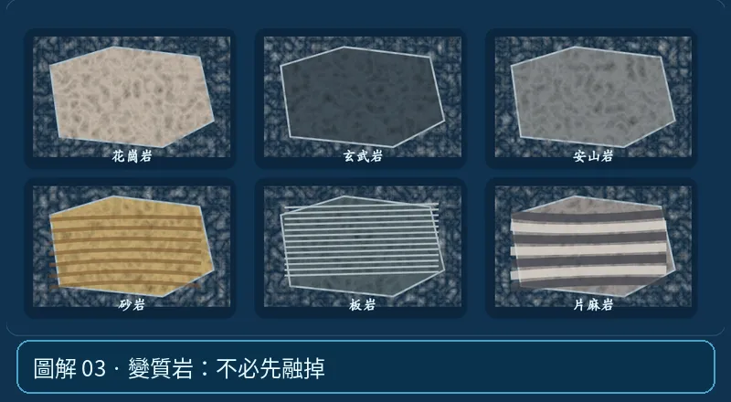

第 03 單元｜圖解 3/6｜課本 p.71–75
變質岩：不必先融掉
原有岩石在未完全熔融的高溫高壓下，礦物與組織改變，形成變質岩。定向壓力可讓礦物排列出片理，如板岩、片岩、片麻岩。
① 看一眼② 操作圖③ 自己推理④ 揭開解答
🔬 這張圖，請自己動手試
操作圖上方的頁籤、滑桿或按鈕；圖片也能左右滑動放大觀看。
互動圖解 · 變質岩：不必先融掉

原創 SVG 地科教學模型，方便理解，非真實比例、非即時地震資料；互動無法載入時仍有靜態圖。
STEP 01 · 先觀察
👀 眼睛先找線索
比較呈現定向紋理或片狀構造的標本；再回想它經歷了怎樣的高溫高壓。
💡 為什麼是這樣？
變質作用可讓礦物重結晶或定向排列，不需先完全融化。片理通常與定向壓力和礦物重新排列有關。
🎯 換個問法想一題
有片理的變質岩，一定是由砂岩變成的嗎？
我想好了，點開看答案 ↓
不是。多種原岩都可能在變質作用下產生片理。
⚡ 一句記住：壓力和熱改造